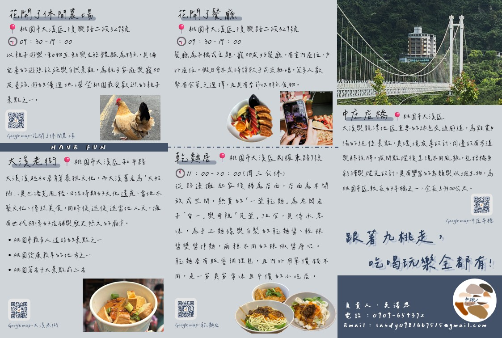
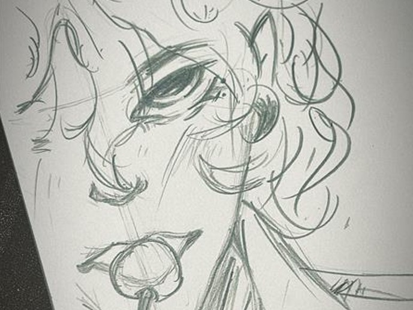
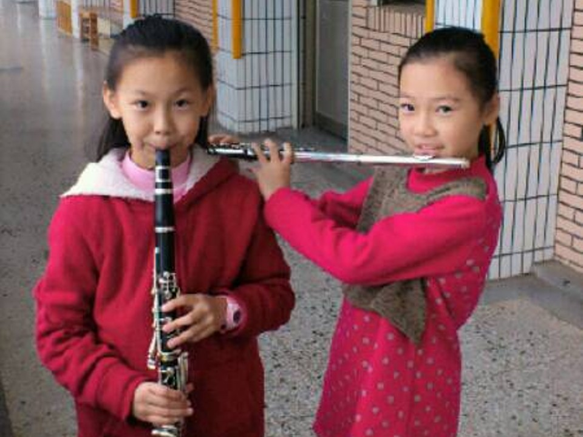
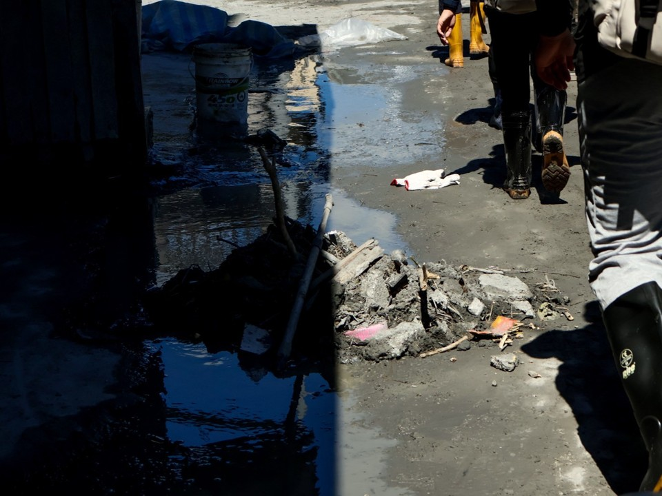

-
吳濬恩
我是就讀中原大學資訊管理學系的吳濬恩!
是緊急醫療救護社社長， 也是一位國家認可的救護員，
致力於把興趣變成專長，相信自己擁有無限潛能。
擔任救護員與指導員的使命，是想讓所有人在關鍵時刻伸出援手 - 讓所有人 「敢救、會救」!
沒有最好只有能更好，相信自己擁有無限潛能
我是就讀中原大學資訊管理學系的吳濬恩!
是緊急醫療救護社社長， 也是一位國家認可的救護員，沒有最好只有能更好，相信自己擁有無限潛能
EMT-1為國家級認可救護員，可跟隨救護車出勤，是歷經56小時的訓練與考核所獲得，
已擔任多次運動賽事場邊救護員與跟隨救護車出勤，相信自己的雙手可以拯救自己，拯救他人。
目前考取指導員證照中，需上滿16小時課程與實習滿24小時才可獲的證照，而我完成實習後就可擔任基本救命術指導員。
圖片為EMT-1結訓考所拍攝。
大一加入緊急醫療救護社並擔任第十屆副社長，如今為第十一屆社長，同時是校園捐血總協，在社團期間累積豐富出勤與教學經驗，
本學期安排各式基本急救知識與技能課程，並擔任講師教導社員，在大一擔任副社長期間收穫豐富，
並在大二擔任社長時學以致用，本學期已為社團接下2-3起與外校協會合作案，也擔任多起活動講師，推廣急救教育，
並在114年11月初為社團榮獲第32屆傑青獎傑出社團，獲獎金、獎牌與總統召見表揚資格，
不僅為社團增加知名度，更為學校增添榮譽。
在社團期間不僅學會溝通技巧、待人處事，更學會如何成為一位優秀的領導者，目前仍處於學習這項能力中，
相信未來的自己會比現在的自己更加優秀，更加努力。
圖片為社團為美國克萊門大學交換生所設計2025年暑期實習課程_急救技術培訓課程，
而我正在教導急產接生須注意事項以及如何從子宮內正確協助新生兒出生等。
高三參加XTERRA志工擔任周邊商品店鋪的銷售員，與選手溝通並推銷商品為他們服務；
大一至大二皆在衛生保健組工作，協助櫃台服務、掛號、體健工讀生及負責收取學餐留樣檢體，
在學生發生疑似食物中毒事件時可將收回的食物送去檢驗；
除了以上兩個也曾因為社團緣故校內單位與校外協會及合作擔任講師，為社區民眾、校內學生等教導急救知識。
以上的工作經歷，累積了豐富的社會實務經驗，不僅學習到職場中溝通協調、時間管理與問題解決等核心能力，
也培養了在壓力下保持冷靜、有效執行任務的專業態度。
透過不斷的實踐與反思，我更加理解團隊合作與責任分工的重要性，
並學會在不同情境中靈活應對與自我成長，成為我持續進步與面對挑戰的力量。
圖片為與校內單位合作擔任講師教導經濟不利新住民子女報案技巧與流程。


在大一下企業概論中，以「桃園一日遊」為主題設計專案，九個人利用養石頭的特色，幫公司取名「九桃有限公司」， 意為石頭的台語諧音以及九人桃園專案規劃， 期間，與組員一同前往深入大溪區探訪，精選五項休閒景點與餐廳，提供深度旅遊及在地文化體驗， 藉由自然生態、在地生活與人文特色的遊憩方式，提供目標客群具沉浸感與文化價值的一日遊體驗。 在課程中擔任組長，並為專案設計主視覺與影片剪輯，在與組員共同努力發想與設計下，成功完成「桃園一日遊」的完整企劃提案與成果發表。 過程中，學習到如何將創意轉化為具體可行的行銷策略，並運用分工與協調技巧帶領團隊整合各項資源。 此專案不僅提升了我在企劃撰寫、視覺設計與影片製作上的專業能力，也讓我深刻體會團隊合作、溝通協調與領導統籌的重要性， 為日後跨領域專案執行奠定了良好的基礎。圖片為專案宣傳型錄。
HTML、CSS
C++
Java
Python
C#

在小時候就特別喜歡畫圖，長大後逐漸學習更多繪畫技巧； 設計方面為自學平面設計、排版等技能，應用在社團海報、企業概論專案主視覺等等。

自小學三年級開始學習豎笛並加入學校管樂團，後來自己學習了長笛與短笛， 在管樂團待久後學會另一項神奇技能， 只要給我一種樂器的吹嘴(如小號、上低音號、薩克斯風等等)， 就能吹出此樂器至少一個八度的音。 圖片為國小三年級假日練習時所拍攝。

從小因為爸媽十分喜歡拍照記錄自己的小孩且家裡有許多台數位相機， 因此也在成長過程中喜歡上攝影， 目前自己存錢買了人生中第一台屬於自己的相機CANON R10， 因為小巧攜帶方便且符合我日常拍攝需求因此選擇此型號。 照片為中秋連假期間前往花蓮馬太鞍村時所拍攝。
原本是自己喜歡撿旅遊volg後來因為社團的緣故學習更多剪輯技巧， 因此從興趣漸漸轉為專長，並以此為社團製作宣傳與花絮影片。 影片為社團十週年紀念活動預告片。